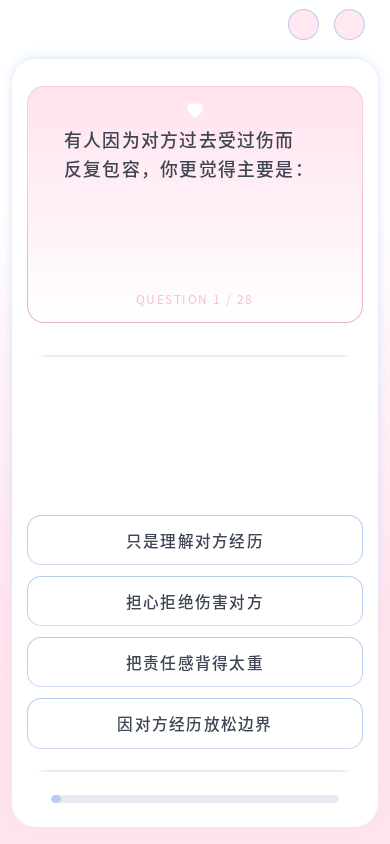
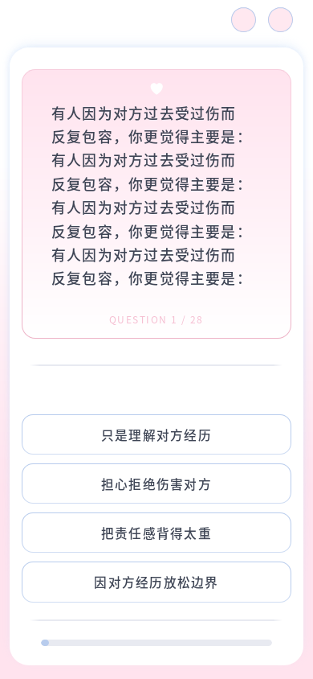
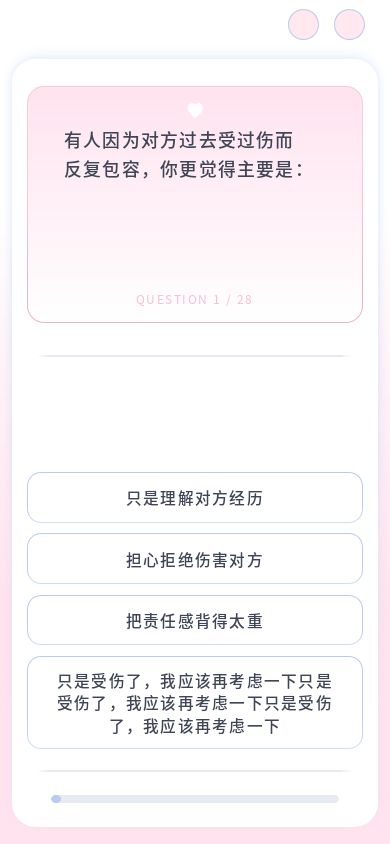

同题前后截图



2026-10-13 · 本地 Firefox · 前后固定 C10，所有测量均为 CSS 像素。

以下是仅在浏览器 DOM 中临时延长文本的压力场景，不写入题库。题框顶边与选项组底边保持不动；两个区域在中间留白充足时分别向下、向上展开。


| 视口 | 题框增高 | 选项组顶边位移 | 选项组底边位移 |
|---|---|---|---|
| 390 × 844 | +98.35px | -42.35px | 0.000px |
| 768 × 1024 | +70.30px | -18.33px | 0.000px |
| 1440 × 900 | +153.63px | -20.23px | 0.000px |
共 960 组通过：灰线距离、选项底部锚点、题框固定顶边、题框与选项同宽、完整文本、底部留白、滚动可达性与重复 resize。灰线距离最大误差小于 0.001px。
| 视口 | 题框到灰线 | C10 左侧留白（原 → 新） | 底部粉色留白 | 逐题检查 |
|---|---|---|---|---|
| 320 × 572 | 32.000px | 9.600 → 10.083px | 17.000px | 96/96 |
| 360 × 640 | 32.000px | 10.800 → 11.333px | 17.000px | 96/96 |
| 375 × 667 | 32.000px | 11.250 → 11.817px | 17.000px | 96/96 |
| 390 × 844 | 32.000px | 11.700 → 12.283px | 17.000px | 96/96 |
| 430 × 932 | 32.000px | 12.900 → 13.550px | 17.000px | 96/96 |
| 768 × 1024 | 32.000px | 23.033 → 24.200px | 17.000px | 96/96 |
| 1440 × 900 | 32.000px | 80.000 → 84.000px | 17.000px | 96/96 |
| 844 × 390 | 32.000px | 19.317 → 20.283px | 17.000px | 96/96 |
| 899 × 900 | 32.000px | 26.967 → 28.317px | 17.000px | 96/96 |
| 900 × 899 | 32.000px | 27.000 → 28.350px | 17.000px | 96/96 |
完整 28 题、上一题、返回未答题、刷新恢复、关于页往返及完成跳转通过。100%/200% 浏览器缩放在相同 CSS 视口下的位置与换行一致；200% 字号和状态提示亦通过。窄屏及矮横屏长内容通过整页滚动完整阅读。Firefox 不支持 pretty，本轮未实测其他浏览器或实体手机。
矮横屏 Range 检测中，字体字形可能略超出段落行盒；修改前后均如此，overflow 为 visible，仍完整位于题框内。最终按实际题框边界验证，未改字号或行高掩盖检测误判。
Node 测试 13/14 通过，唯一失败是已有的题库 Markdown 与运行 JSON 不一致。本轮仅修改答题布局 CSS、布局脚本与项目说明；两份题库哈希未变，评分代码未修改。